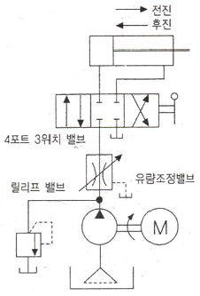
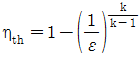
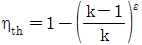
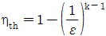
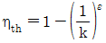
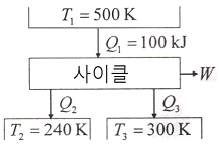
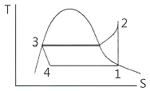
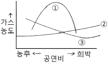
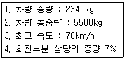
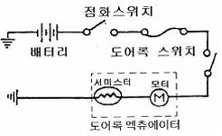

자동차정비기사 (2012-03-04 기출문제)
1과목: 일반기계공학
1. 1000N의 하중이 작용하는 엔드저널에서 발생하는 베어링의 압력이 0.1MPa이고, 이때 엔드저널에 발생한 굽힘응력은 2.5MPa일 때 베어링 지름은 약 몇 ㎜인가? (단, 엔드저널 중앙에 하중이 작용한다고 한다.)
- 67
- 77
- 85
- 95
(정답률: 51%)

2. 직사각형 단면의 높이가 폭의 2배인 단순보에 최대 굽힘모멘트가 62.5kN·m 작용할 때, 최대 굽힘응력이 750kPa인 경우 단면의 폭은 약 몇 ㎝인가?
- 35
- 40
- 45
- 50
(정답률: 30%)
3. Bach가 제안한 축지름을 구하는 공식에서 축의 1m당 최대 비틀림 각은 몇 도(°)로 가정 하였는가?
- (1/2)°
- (1/4)°
- (1/6)°
- (1/8)°
(정답률: 60%)
4. 아래 그림에서 나타내는 유압 회로도의 명칭은?

- 시퀀스 회로
- 미터 인 회로
- 브레이크 회로
- 미터 아웃 회로
(정답률: 59%)
5. 주조품 제조 시 사용되는 모형 중 제품의 수량이 적고, 형상이 대형인 경우 그 형상의 골격을 목재로 만들어, 그 사이를 점토로 메워 제작하는 모형은?
- 현형
- 부분모형
- 골조모형
- 회전모형
(정답률: 67%)
6. 용융금속을 금속 주형에 넣어 대기압 이상의 압력을 가해 표면이 매끈하고 정밀한 주물을 주조할 수 있는 주조법은?
- 원심주조법
- 셀몰드법
- 다이캐스팅법
- 인베스트먼트 주조법
(정답률: 60%)
7. 리벳이음에서 리벳의 지름이 d, 피치가 p일 때 판 효율을 구하는 식으로 옳은 것은?
- 1 - d/p
- 1 - p/d
- d/p - 1
- p/d - 1
(정답률: 59%)
8. 원통 커플링에서 축 지름이 30㎜이고, 원통이 축을 누르는 힘이 50N일 때 커플링이 전달할 수 있는 토크는 약 몇 N·㎜인가? (단, 접촉부 마찰계수는 0.2이다.)
- 471
- 587
- 785
- 942
(정답률: 39%)
9. 유압 펌프의 송출 압력이 6.9MPa이고, 전효율이 84%, 동력이 22kW인 전동기를 이용하여 유압 펌프를 구동하고자 할 때 유압 펌프의 송출량은 약 몇 cm2/s인가?
- 1763
- 2165
- 2414
- 2678
(정답률: 21%)
10. 기계재료로 사용되는 합성수지에 대한 일반적인 설명으로 틀린 것은?
- 내화성 및 내열성이 좋지 않다.
- 가공성이 좋고 성형이 간단하다.
- 투명한 것이 있으며 착색이 자유롭다.
- 비중 대비 강도 및 강성이 낮은 편이다.
(정답률: 72%)
11. 나사에서 산과 산, 또는 골과 골 사이의 거리를 무엇이라고 하는가?
- 피치
- 리드
- 나선각
- 골지름
(정답률: 60%)
12. 오스테나이트계 스테인리스강의 일반적인 특징을 설명한 것으로 틀린 것은?
- 염산, 황산 등에 약하다.
- 내식성이 우수하다.
- 내충격성이 우수하다.
- 자성체이다.
(정답률: 69%)
13. 2개의 판을 결합한 볼트의 축 방향과 직각 방향으로 전단하중 4kN이 작용할 때, 나사의 골지름은 최소 약 몇 ㎜ 이상이어야 하는가? (단, 재료의 허용전단응력은 5MPa이다.)
- 12㎜
- 24㎜
- 32㎜
- 64㎜
(정답률: 44%)
14. 압연가공에서 압연 전의 두께를 H0, 압연 후의 두께를 H1이라고 할 때 압하율(K)을 구하는 식은?
- K = (H1-H0)/H0 × 100
- K = (H1-H0)/H1 × 100
- K = (H0-H1)/H1 × 100
- K = (H0-H1)/H0 × 100
(정답률: 50%)
15. 회전 운동을 직선 운동으로 바꾸는 기어는?
- 스크루 기어(screw gear)
- 내접 기어(internal gear)
- 랙과 피니언(rack and pinion)
- 하이포이드 기어(hypoid gear)
(정답률: 73%)
16. 오일탱크의 가장 낮은 쪽에 이물질이나 응축된 수분, 오염된 작동유를 제거하기 위해 설치하는 것은?
- 드레인
- 배플 플레이트
- 스트레이너
- 유면계
(정답률: 59%)
17. 기어의 잇수가 36이고 피치원의 지름이 216㎜일 때 원주피치로 가장 적합한 것은?
- 18.85㎜
- 28.83㎜
- 37.72㎜
- 47.78㎜
(정답률: 37%)
18. 탄소강은 아공석강 영역(C＜0.77%)에서 탄소 함유량이 증가함에 따라 변화되는 기계적 성질로 올바른 것은?
- 경도와 충격치는 감소한다.
- 경도는 증가하고, 충격치는 감소한다.
- 경도는 감소하고, 충격치는 증가한다.
- 경도와 충격치는 증가한다.
(정답률: 55%)
19. 구성인선(build-up edge)의 발생을 방지하는 대책으로 가장 적합한 것은?
- 절삭 속도를 느리게 하고, 절삭 깊이 및 이송 속도를 크게 한다.
- 절삭 속도를 빠르게 하며, 윤활성이 좋은 절삭유를 사용한다.
- 바이트의 윗면 경사각을 작게 하고, 이송 속도를 작게 한다.
- 절삭 깊이를 깊게 하고, 이송 속도를 크게 한다.
(정답률: 65%)
20. 원형 단면의 단면 2차 모멘트 I로 맞는 식은? (단, d는 원형 단면의 지름이다.)
- I = πd4/32
- I = πd3/32
- I = πd4/64
- I = πd3/64
(정답률: 49%)
2과목: 기계열역학
21. 실린더 안에 0.8kg의 기체를 넣고 이것을 압축하기 위해서는 13kJ의 일이 필요하며, 또 이때 실린더를 냉각하기 위해서 10kJ의 열을 빼앗아야 한다면 이 기체의 비 내부에너지 변화량은?
- 3.75kJ/kg의 증가
- 28.8kJ/kg의 증가
- 3.75kJ/kg의 감소
- 28.8kJ/kg의 감소
(정답률: 45%)
22. 에어컨을 이용하여 실내의 열을 외부로 방출하려 한다. 실외 35℃, 실내 20℃인 조건에서 실내로부터 3kW의 열을 방출하려 할 때 필요한 에어컨의 동력은 얼마인가? (단, Carnot cycle)을 가정한다.)
- 0.154kW
- 1.54kW
- 15.4kW
- 154kW
(정답률: 42%)
23. 29℃와 227℃ 사이에서 작동하는 카르노(Carnot) 사이클 열기관의 열효율은?
- 60.4%
- 39.6%
- 0.604%
- 0.396%
(정답률: 57%)
24. 두께 1㎝, 면적 0.5m2의 석고판의 뒤에 가열판이 부착되어 1000W의 열을 전달한다. 가열판의 뒤는 완전히 단열되어 열은 앞면으로만 전달된다. 석고판 앞면의 온도는 100℃이다. 석고의 열전도율이 k＝0.79W/m·K일 때 가열판에 접하는 석고면의 온도는 약 몇 ℃인 가?
- 110
- 125
- 150
- 212
(정답률: 38%)
25. 다음 냉동 시스템의 설명 중 틀린 것은?
- 왕복동 압축기는 냉매가 낮은 비체적과 높은 압력일 때 적합하며 원심 압축기는 높은 비체적과 낮은 압력일 때 적합하다.
- R-22와 같이 수소를 포함하는 HCFC는 대기 중의 수명이 비교적 짧으므로 성층권에 도달하여 분해되는 양이 적다.
- 냉동 사이클은 동력 사이클의 터빈을 밸브나 긴 모세관 등의 스로틀 기기로 대치하여 작동유체가 고압에서 저압으로 스로틀 팽창하도록 한다.
- 흡수식 시스템은 액체를 가압하므로 소요되는 입력 일이 매우 크다.
(정답률: 45%)
26. 고속주행 시 타이어의 온도는 매우 많이 상승한다. 온도 20℃에서 계기압력 0.183MPa 의 타이어가 고속주행으로 온도 80℃로 상승할 때 압력 상승한 양(kPa)은? (단, 타이어의 체적은 변하지 않고, 타이어 내의 공기는 이상기체로 가정한다. 대기압은 101.3kPa이다.)
- 약 37kPa
- 약 58kPa
- 약 286kPa
- 약 345kPa
(정답률: 42%)
27. 어떤 냉장고에서 질량유량 80kg/hr의 냉매가 17kJ/kg의 엔탈피로 증발기에 들어가 엔탈피 36kJ/kg가 되어 나온다. 이 냉장고의 냉동능력은?
- 1220kJ/hr
- 1800kJ/hr
- 1520kJ/hr
- 2000kJ/hr
(정답률: 52%)
28. 오토사이클(Otto Cycle)의 이론적 열효율 ηth를 나타내는 식은? (단, ε는 압축비, K는 비열비이다.)




(정답률: 53%)
29. 다음 사항 중 옳은 것은?
- 엔트로피는 상태량이 아니다.
- 엔트로피를 구하는 적분 경로는 반드시 가역변화라야 한다.
- 비가역 사이클에서 클라우지우스(Clausius) 적분은 영이다.
- 가역, 비가역을 포함하는 모든 이상기체의 등온변화에서 압력이 저하하면 엔트로피도 저하한다.
(정답률: 47%)
30. 성능계수(COP)가 0.8인 냉동기로서 7200kJ/h로 냉동하려면, 이에 필요한 동력은?
- 약 0.9kW
- 약 1.6kW
- 약 2.5kW
- 약 2.0kW
(정답률: 55%)
31. 다음 중 열역학적 상태량이 아닌 것은?
- 기체상수
- 정압비열
- 엔트로피
- 압력
(정답률: 49%)
32. 물질의 상태에 관한 설명으로 옳은 것은?
- 압력이 포화압력보다 높으면 과열증기 상태다.
- 온도가 포화온도보다 높으면 압축액체이다.
- 임계압력 이하의 액체를 가열하면 증발현상을 거치지 않는다.
- 포화상태에서 압력과 온도는 종속관계에 있다.
(정답률: 43%)
33. 다음 열기관 사이클의 에너지 전달량으로 적절한 것은?

- Q2=20kJ, Q3=30kJ, W=50kJ
- Q2=20kJ, Q3=50kJ, W=30kJ
- Q2=30kJ, Q3=30kJ, W=50kJ
- Q2=30kJ, Q3=20kJ, W=50kJ
(정답률: 45%)
34. 질량 m＝100kg인 물체에 a＝2.5m/s2의 가속도를 주기 위해 가해야 할 힘(F)은 약 몇 N인가?
- 102
- 2⑤
- 225
- 250
(정답률: 58%)
35. 100kPa, 20℃의 물을 매시간 3000kg씩 500kPa로 공급하기 위하여 소요되는 펌프의 동력은 약 몇 kW인가? (단, 펌프의 효율은 70%로 물의 비체적은 0.001m3/kg으로 본다.)
- 0.33
- 0.48
- 1.32
- 2.48
(정답률: 35%)
36. 그림과 같은 증기압축 냉동사이클이 있다. 1, 2, 3 상태의 엔탈피가 다음과 같을 때 냉매의 단위 질량당 소요동력과 냉각량은 얼마인가? (단, h1=178.16, h2=210.38, h3=74.53, 단위 : kJ/kg)

- 32.22kJ/kg, 103.63kJ/kg
- 32.22kJ/kg, 136.85kJ/kg
- 103.63kJ/kg, 32.22kJ/kg
- 136.85kJ/kg, 32.22kJ/kg
(정답률: 46%)
37. 대기압 하에서 20℃의 물 1kg을 가열하여 같은 압력의 150℃의 과열 증기로 만들었다 면, 이때 물이 흡수한 열량은 20℃와 150℃에서 어떠한 양의 차이로 표시되겠는가?
- 내부에너지
- 엔탈피
- 엔트로피
- 일
(정답률: 46%)
38. 두 정지 계가 서로 열 교환을 하는 경우에 한쪽 계는 수열에 의한 엔트로피 증가가 있고, 다른 계는 방열에 의한 엔트로피 감소가 있다. 이들 두 계를 합하여 한 계로 생각하면 단열된 계가 된다. 이 합성계가 비가역 단열변화를 하면 이 합성계의 엔트로피 변화 dS는?
- dS＜0
- dS＞0
- dS＝0
- dS≠0
(정답률: 48%)
39. 질량 4kg의 액체를 15℃에서 100℃까지 가열하기 위해 714kJ의 열을 공급하였다면 액체의 비열(specific heat)은 몇 J/kg·K인가?
- 1100
- 2100
- 3100
- 4100
(정답률: 52%)
40. 800kPa, 350℃의 수증기를 200kPa로 교축 한다. 이 과정에 대하여 운동 에너지의 변화를 무시할 수 있다고 할 때 이 수증기의 Joule-Thomson 계수는? (단, 교축 후의 온도는 344℃이다.)
- 0.0⑤K/kPa
- 0.01K/kPa
- 0.02K/kPa
- 0.03K/kP
(정답률: 42%)
3과목: 자동차기관
41. 전자제어 가솔린 기관의 연료장치에 대한 설명으로 틀린 것은?
- 연료 펌프 릴리프 밸브의 접촉 불량이 일어나면 연료 압력이 높아진다.
- 연료 리턴 파이프나 호스가 막히면 연료 압력이 높아진다.
- 인젝터에서 연료가 누출되면 엔진정지 후 압력이 낮아진다.
- 연료 펌프의 첵 밸브 불량 시 정지 후 연료 압력이 급격히 낮아진다.
(정답률: 49%)
42. 자동차 기관에서 단 행정 기관의 장점이 아닌 것은?
- 흡·배기 밸브의 지름을 크게 할 수 있어 흡·배기 효율을 높일 수 있다.
- 피스톤의 평균속도를 높이지 않고 기관의 회전속도를 빠르게 할 수 있다.
- 기관의 높이를 낮게 할 수 있다.
- 직렬형 기관인 경우 기관의 길이가 짧아진다.
(정답률: 60%)
43. LPG 연료 계통에서 냉각수 라인의 영향을 받는 부품 및 그 목적은?
- 베이퍼라이저(vaporizer) : 내부 밸브 동결 방지
- 믹서(mixer) : 연료와 공기와의 혼합성 증대
- 긴급 차단 솔레노이드 밸브 : 연료의 누출 차단
- 연료 탱크 : 연료 게이지의 동파 방지
(정답률: 58%)
44. 흡기다기관의 진공도 시험으로 기관 상태를 알아낼 수 있는 사항으로 틀린 것은?
- 밸브 면과 시트와의 밀착 불량
- 압축 압력 누설
- 실린더 헤드 캐스킷의 불량
- 연료회로의 불량
(정답률: 69%)
45. 다음 그림은 가솔린기관의 공연비와 배출가스 농도의 관계를 나타낸 것이다. ①의 곡선이 나타내는 성분은?

- CO
- NOx
- HC
- SOx
(정답률: 60%)
46. 기관의 냉각장치에서 부동액의 구비 조건으로 틀린 것은?
- 물과 쉽게 혼합할 것
- 비등점이 낮을 것
- 침전물이 없을 것
- 부식성이 없을 것
(정답률: 68%)
47. 가솔린과 비교한 LP가스의 설명으로 틀린 것은?
- 공기보다 무겁다.
- 저장은 기체상태로 한다.
- 연료 중진은 탱크 용량의 약 85% 정도로 한다.
- 온도상승에 의해 압력상승이 일어난다.
(정답률: 62%)
48. 출력 0.6kW인 시동모터가 0.001kWh의 일을 하여 기관을 시동하였다면 시동에 소요된 시간은?
- 6초
- 12초
- 24초
- 36초
(정답률: 55%)
49. 전자제어 가솔린 연료분사장치에서 공회전 속도 제어를 위해 엔진컴퓨터(ECU)로 입력 요소가 아닌 것은?
- 액추에이터
- 인히비터 스위치
- 냉각수 온도
- 차속센서
(정답률: 53%)
50. 가솔린기관의 성능에 관계되는 가솔린 성상만으로 짝지어진 것은?
- 비중, 증류성상, 증기압, 옥탄가, 기화성
- 비중, 증류성상, 증기압, 옥탄가, 세탄가
- 비중, 세탄가, 증기압, 옥탄가, 기화성
- 비중, 증류성상, 세탄가, 옥탄가, 기화성
(정답률: 65%)
51. 유압식 밸브간극 조정 기구(HLA : Hydraulic Lash Adjuster)의 특성으로 틀린 것은?
- 항상 밸브간극이 '0'으로 조정된다.
- 밸브 소음을 줄일 수 있다.
- 밸브 리프터 내에 공기 유입 시에 소음이 발생될 수 있다.
- 밸브 내구성 면에서는 기계식보다 불리하다.
(정답률: 55%)
52. 전자제어 가솔린기관에서 차량의 성능향상과 배출가스 저감을 위해 공연비 피드백 제어를 하지 않는 경우 중 틀린 것은?
- 시동 시 및 시동 후 연료 증량 시
- 급 감속 및 고회전시 연료 차단 제어를 할 때
- TPS 개도 50% 정도의 중 부하 주행 시
- 흡입공기량 센서 및 인젝터의 연료 분사에 영향을 주는 센서가 고장일 때
(정답률: 62%)
53. 피스톤 행정의 길이가 100mm, 엔진의 회전수는 1500rpm인 4행정 사이클 가솔린 엔진의 피스톤 평균속도는?
- 15m/s
- 10m/s
- 5m/s
- 4m/s
(정답률: 38%)
54. 디젤기관의 기계식 연료분사 펌프에서 딜리버리 밸브의 기능이 아닌 것은?
- 연료의 역류 방지
- 분사의 확실한 단속
- 후적 방지
- 연료 분사량의 가감
(정답률: 50%)
55. 희박연소 기관의 엔진 컴퓨터가 전자 제어하는 항목이 아닌 것은?
- 연료 분사시기 제어
- 희박연소 보정제어
- 공연비 피드백 제어
- 가속성능 제어
(정답률: 48%)
56. 전자제어 가솔린엔진에서 운전 중 연료를 차단(fuel cut)하는 경우로 가장 적합한 것은?
- 일정회전속도(red zone) 이상일 때
- 차량이 정속 주행상태일 때
- 산소 센서가 고장일 때
- 퍼지 컨트롤 밸브가 누설될 때
(정답률: 65%)
57. 전자제어 가솔린기관에서 엔진컴퓨터(ECU)의 입력센서 중 속도밀도방식의 흡기유량 간접 계측과 관계있는 것은?
- 핫 필름(hot film) 방식
- 맵(MAP) 센서 방식
- 칼만 와류(karman vortex) 방식
- 메저링 플레이트(measuring plate) 방식
(정답률: 58%)
58. 디젤기관의 와류실식 연소실의 장점이 아닌 것은?
- 실린더 헤드의 구조가 간단하다.
- 분사압력이 낮아도 된다.
- 엔진의 사용 회전속도 범위가 넓고 운전이 원활하다.
- 압축행정에서 발생하는 강한 와류를 이용하기 때문에 회전속도 및 평균 유효압력을 높일 수 있다.
(정답률: 55%)
59. 전자제어 가솔린기관에서 공기유량 센서가 불량일 경우 예상되는 증상으로 틀린 것은?
- 연료펌프가 작동하지 않는다.
- 가속이 늦거나 거칠게 엔진 부조가 발생할 수 있다.
- 크랭킹은 되나 시동이 되지 않을 수 있다.
- 가속페달을 밟거나 뗄 때 시동이 꺼질 수 있다.
(정답률: 63%)
60. 가솔린기관, 자동변속기, 현가장치 등이 모두 전자제어식 차량일 때 공통으로 필요한 센서는?
- G 센서
- 차속센서
- 수온센서
- 휠 속도센서
(정답률: 62%)
4과목: 자동차새시
61. 전자제어 자동변속기에서 댐퍼클러치의 작동영역을 판정하기 위해 출력축 회전수를 검축하는 부품은?
- 가속 페달 스위치
- 스로틀 포지션 센서
- 이그니션 신호
- 펄스 제너라이터
(정답률: 58%)
62. 차륜정렬에서 토인의 필요성에 대한 설명으로 틀린 것은?
- 조향 링키지의 마멸에 의해 토아웃이 되는 것을 방지한다.
- 수직 방향의 하중에 의한 앞차축의 휨을 방지한다.
- 앞바퀴를 평행하게 회전시킨다.
- 바퀴가 옆 방향으로 미끄러지는 것과 타이어의 마멸을 방지한다.
(정답률: 56%)
63. 조향장치의 구비 조건이 아닌 것은?
- 조향 조작이 주행 중의 충격에 영향을 받지 않을 것
- 조향휠의 회전과 바퀴의 선회 차이가 클 것
- 고속주행에서도 조향휠이 안정될 것
- 선회 시 회전각과 선회반경의 관계를 예측할 수 있을 것
(정답률: 65%)
64. 현가장치에서 드가르봉식 쇽업소버의 특징에 속하지 않는 것은?
- 구조가 간단하다.
- 실린더가 2개이므로 방열성능이 크다.
- 내부에 압력이 걸려있어 분해하는 것은 위험하다.
- 작동할 때 오(O)링에 기포발생이 없어 장시간 작동하여도 감쇄효과의 감소가 적다.
(정답률: 38%)
65. 전자제어 현가장치의 장점으로 맞지 않는 것은?
- 승차감이 좋다.
- 고속주행시 안정감이 있다.
- 급제동시 노스다운 된다.
- 노면상태에 따라 차량의 높이가 조절된다.
(정답률: 63%)
66. 자동차 검차라인에서 테스터기 사용 및 측정에 관한 주의사항으로 틀린 것은?
- 테스터기 답판 위에 주차하거나 정비 작업을 하지 않는다.
- 물, 흙, 먼지 등이 테스터 내에 들어가지 않도록 한다.
- 테스터기 답판 위에서 조향하거나 브레이크를 밟지 않는다.
- 허용 축중 이상의 자동차는 답판과 차륜의 중앙을 정확히 일치시켜야 한다.
(정답률: 59%)
67. 제동장치에서 브레이크 작동 시 제동계통과 직접 관련된 고장사항과 거리가 먼 것은?
- 브레이크가 밀린다.
- 페달이 푹 들어간다.
- 페달이 딱딱하다.
- 엔진 rpm이 떨어진다.
(정답률: 64%)
68. 동력 조향장치를 장착한 자동차에서 핸들이 무거워지는 원인으로 틀린 것은?
- 유압이 규정압력보다 낮다.
- 타이어의 공기압이 낮다.
- 유압회로 내에 공기가 차 있다.
- 동력 조향 펌프의 회전속도가 빠르다.
(정답률: 59%)
69. 공기식 브레이크 작동에 대한 설명으로 틀린 것은?
- 휠 브레이크는 일반적으로 리딩 트레일링 슈 방식이다.
- 앵커 핀을 사용한 형식을 사용하고 있다.
- 앞 브레이크에서 브레이크 챔버의 푸시로드는 슬랙 어저스터를 통해 브레이크 캠을 작동 시킨다.
- 슬랙 어저스트는 브레이크 캠의 레버 속에 랙 피니언식을 사용한다.
(정답률: 50%)
70. 하이브리드 자동차가 주행 중 감속 또는 제동상태에서 모터를 발전모드로 전환시켜서 제동에너지의 일부를 전기에너지로 변환하는 모드는?
- 발진가속모드
- 제동전기모드
- 회생제동모드
- 주행전환모드
(정답률: 67%)
71. 변속기에서 증속 구간으로 주행할 때 장점이 아닌 것은?
- 연료가 절약된다.
- 타이어의 마모가 적게 된다.
- 엔진의 운전이 조용하게 된다.
- 엔진의 수명이 연장된다.
(정답률: 50%)
72. 타이어에서 트레드 패턴(tread pattern)의 필요성이 아닌 것은?
- 사이드 슬립이나 전진방향의 미끄럼을 방지한다.
- 타이어 내부에서 발생되는 열을 흡수한다.
- 트레드에서 발생한 열을 방산시킨다.
- 사용목적에 따라 구동력, 선회 성능을 향상시킨다.
(정답률: 71%)
73. 앞 엔진 앞바퀴 구동 차량(FF)의 특징이 아닌 것은?
- 직진성이 양호하다.
- 연료탱크 위치가 후륜구동보다 안전한 위치에 있다.
- 전·후륜의 적절한 중량배분에 의해 승차감이 좋다.
- 빙판에서의 발진이 후륜구동보다 양호하다.
(정답률: 59%)
74. 수동변속기 차량에서 클러치 디스크가 미끄러질 때 나타나는 현상으로 틀린 것은?
- 연료 소비량이 증가한다.
- 엔진이 과열한다.
- 등판능력이 감소한다.
- 구동력이 감소하여 출발이 쉽다.
(정답률: 65%)
75. 자동변속기 내부 작동에서 유압라인에 설치되어 있는 어큐물레이터의 역할은?
- 유압을 신속하게 전달하는 역할을 한다.
- 유압 누설을 방지하는 역할을 한다.
- 유압 충격을 흡수하는 역할을 한다.
- 유압을 일정하게 하는 역할을 한다.
(정답률: 53%)
76. 전자제어 제동장치(ABS) 장착차량의 장점이 아닌 것은?
- 좌우 노면 상태가 다를 때 차량의 스핀을 줄여준다.
- 제동 시 직진 안정성을 유지할 수 있다.
- 선회 주행 중 제동 시 조향성을 유지시킨다.
- 무거운 제동조건에서 휠을 빨리 록(lock) 할 수 있다.
(정답률: 57%)
77. 타이어의 소음 중에 직진 주행 시 트레드 디자인에 같은 간격으로 배열된 피치가 노면을 규칙적으로 치는 데서 발생되는 소음은?
- 럼블(Rumble) 소음
- 험(Hum) 소음
- 스퀼(Squeal) 소음
- 패턴(Pattern) 소음
(정답률: 29%)
78. 브레이크 마스터 실린더에 잔압을 두는 이유로 틀린 것은?
- 제동지연 방지
- 부스터 진공형성 방지
- 오일누출 방지
- 베이퍼록 방지
(정답률: 52%)
79. 자동변속기의 스톨 시험 시 보통 규정 회전수 영역으로 적합한 것은?
- 약 700~800rpm
- 약 1000~1500rpm
- 약 2000~2600rpm
- 약 3500~4000rpm
(정답률: 57%)
80. 다음 제원은 보통 화물 자동차가 적차상태에 있어서 제동초속도 35km/h에서 제동하였을 때 발생하는 각 바퀴의 제동력의 총합이 3840kg이면 정지거리는?

- 약 8.1m
- 약 7.1m
- 약 6.1m
- 약 5.5m
(정답률: 37%)
5과목: 자동차전기
81. 전조등의 주광축은 그 하향 진폭이 전방 10m에 있어서 등화설치 높이의 얼마 이내에 있어야 안전기준에 적합한가?
- 2/5
- 3/8
- 3/10
- 5/10
(정답률: 58%)
82. 플레밍의 오른손 법칙을 이용한 것은?
- 축전기
- 발전기
- 트랜지스터
- 전동기
(정답률: 67%)
83. 물질의 전기저항 특성에 대한 설명으로 틀린 것은?
- 물질의 저항은 재질, 형상, 온도에 따라 변화한다.
- 단면적이 커지면 저항은 감소한다.
- 전류가 흐르는 거리가 증가하면 저항은 커진다.
- 일반적으로 금속은 온도가 상승하면 저항은 감소한다.
(정답률: 55%)
84. 점화장치에서 무효방전에 대한 내용으로 맞는 것은?
- 동시점화방식에서 배기과정에 있는 점화플러그의 방전을 말한다.
- 독립점화방식에서 케이블을 통해 손실되는 점화에너지의 방전을 말한다.
- 동시점화방식에서 압축과정에 있는 점화플러그의 방전을 말한다.
- 배전기 방식에서 나타나는 점화에너지의 방전을 말한다.
(정답률: 43%)
85. 가솔린기관의 점화 장치에서 한 개의 실린더 파형에서만 점화 2차 전압 피크가 높게 나타난다면 고장 원인으로 가장 적합한 것은?
- 고압 케이블의 저항 또는 점화 플러그 간극이 상대적으로 너무 크다.
- 고압 케이블의 저항 또는 점화 플러그 간극이 상대적으로 너무 작다.
- 혼합기가 너무 농후하거나 또는 점화 플러그 간극이 너무 작다.
- 압축비는 정상이지만 압축압력이 상대적으로 너무 낮다.
(정답률: 63%)
86. 충전장치에서 발전기 내부의 IC레귤레이터가 불량하여 배터리가 과충전 될 수 있는 경우 는?
- 트랜지스터가 파손되어 로터코일에 전류가 흐르지 않는다.
- 여자(조정)다이오드가 파손되어 배터리에서 스테이터로 전류가 흐른다.
- 로터코일이 단락되어 자화 효과가 커지면서 스테이터에서 과전류가 출력된다.
- 제너다이오드가 파손되어 로터코일에 전류가 계속 흐르게 한다.
(정답률: 45%)
87. 하이브리드 전기 자동차와 일반 자동차와의 차이점에 대한 설명 중 틀린 것은?
- 하이브리드 차량은 주행 또는 정지 시 엔진의 시동을 끄는 기능을 수반한다.
- 하이브리드 차량은 정상적인 상태일 때 항상 엔진 기동 전동기를 이용하여 시동을 건다.
- 차량의 출발이나 가속 시 하이브리드 모터를 이용하여 엔진의 동력을 보조하는 기능을 수반한다.
- 차량 감속 시 하이브리드 모터가 발전기로 전환되어 고전압 배터리를 충전하게 된다.
(정답률: 56%)
88. 완전 충전된 축전지를 방전종지 전압까지 방전하는데 20A로 6시간이 걸렸다. 이것을 완전 충전하는데 10A로 15시간 걸렸다면 축전지의 효율(Ah)은?
- 50%
- 70%
- 80%
- 90%
(정답률: 50%)
89. 전자제어 차량에서 점화스위치(key)가 꺼져 있을 때 엔진 컴퓨터회로의 지속적인 작동으로 배터리의 방전을 방지하기 위한 컴퓨터의 기능은?
- 백업(back-up) 연료 모드
- 페일세이프 기능
- 웨이크 업 기능
- 데이터 리스트 기능
(정답률: 50%)
90. 자동차의 전조등 회로에서 한쪽 전조등의 조도가 부족한 원인이 아닌 것은?
- 반사경이 흐려졌을 때
- 전구의 설치 위치가 바르지 않을 때
- 전구의 열화
- 축전지의 용량 부족
(정답률: 64%)
91. 미등 자동 소등(auto lamp cut) 기능에 대한 설명으로 틀린 것은?
- 키 오프(key off)시 미등을 자동으로 소등하기 위해서이다.
- 키 오프(key off)후 미등 점등을 원할 시엔 스위치를 off 후 on하면 미등은 재점등 된다.
- 키 오프(key off)시에도 미등 작동을 쉽고 빠르게 점등하기 위해서이다.
- 키 오프(key off)상태에서 미등 점등으로 인한 배터리 방전을 방지하기 위해서이다.
(정답률: 58%)
92. 에어백 모듈 취급 시 유의사항으로 틀린 것은?
- 물에 닿지 않도록 한다.
- 1.5m 이상에서 자유낙하 정도의 충격이 없어야 한다.
- 배선 및 커넥터에 10kgf 이상의 인장력을 가하지 말아야 한다.
- 배선에 문제가 있을 경우 수리하여 장착한다.
(정답률: 60%)
93. 아래 회로와 같은 정특성 서미스터를 이용한 도어록 시스템에 대한 설명으로 맞는 것은?

- 도어록 스위치가 작동되어 한도 이상의 전류가 흐르면 서미스터가 발열하여 저항이 증가 되어 전류를 제한한다.
- 도어록 스위치가 작동되어 한도 이상의 전류가 흐르면 서미스터가 발열하여 저항이 감소되어 전류를 제한한다.
- 도어록 스위치가 작동되어 한도 이상의 전류가 흐르면 서미스터가 끊어져 저항이 감소된다.
- 도어록 스위치가 작동되어 한도 이상의 전류가 흐르면 서미스터가 발열하여 저항이 감소되고 많은 전류를 흐르도록 유도한다.
(정답률: 58%)
94. 가솔린기관에서 초기 점화시기를 점검하는 방법으로 옳은 것은?
- 공회전 상태에서 시험기(스캔 툴)를 사용하여 점검한다.
- 점화시기 점검은 1500rpm에서 한다.
- 3번 플러그 케이블에 타이밍 라이트를 설치한다.
- 크랭크 풀리의 타이밍 표시가 일치하지 않을 때는 타이밍 벨트를 교환한다.
(정답률: 53%)
95. 파워트랜지스터 방식의 점화장치에서 점화코일에 고압의 2차 전압이 발생되는 시기는?
- 파워트랜지스터가 'on'되어 있을 때
- 파워트랜지스터가 'off'되어 있을 때
- 파워트랜지스터가 'off' 상태에서 'on'되는 순간
- 파워트랜지스터가 'on' 상태에서 'off'되는 순간
(정답률: 59%)
96. 자동 공조장치의 입력센서에 대한 설명으로 틀린 것은?
- 일사량 센서는 포토센서라고도 부르며 광 기전성 다이오드를 내장하고 있다.
- 습도 센서는 차량 실내의 상대 습도를 측정한다.
- 핀 서모 센서는 증발기의 압력을 측정한다.
- AQS 센서는 대기 중의 유해가스를 감지하여 차량 실내 유입을 차단한다.
(정답률: 54%)
97. 레인센서가 장착된 자동 와이퍼 시스템(RSWCS)에서 센서와 유닛의 작동특성에 대한 내용으로 틀린 것은?
- 레인센서 및 유닛은 다기능스위치의 통제를 받지 않고 종합제어 장치 회로와 별도로 작동한다.
- 레인센서는 LED로부터 적외선이 방출되면 빗물에 의해 반사되는 포토다이오드로 비의 양을 감지한다.
- 레인센서의 기능은 와이퍼 속도와 구동지연시간을 조절하고 운전자가 설정한 빗물측정량에 따라 작동한다.
- 비의 양이 부족하여 자동모드로 와이퍼를 동작시킬 수 없으면 레인센서는 오토딜레이 모드에서 길게 머문다.
(정답률: 56%)
98. 기동전동기의 회전력이 4N·m, 엔진의 플라이휠 링기어 잇수 112, 기동전동기의 기어 잇수 8이면 엔진을 기동시키는 회전력은?
- 56N·m
- 58N·m
- 60N·m
- 62N·m
(정답률: 37%)
99. 축전지로부터 기동전동기로 흐르는 회로의 전압강하에 대한 설명 중 틀린 것은?
- 터미널의 접촉이 나쁘면 전압강하가 발생한다.
- 전류가 많이 흐르는 곳이므로 접촉이 조금만 나빠도 전압강하는 크다.
- 전동기의 B 단자까지의 회로는 저항이 크므로 전압강하가 큰 배선을 사용한다.
- 회로의 전압강하 총합은 공급전압과 같다.
(정답률: 56%)
100. 전기장치 정비 시 주의사항으로 틀린 것은?
- 센서, 릴레이 취급 시 심한 충격을 주지 않도록 한다.
- 커넥터가 확실하게 연결되었는가를 확인한다.
- 커넥터를 분리시킬 때는 배선을 잡고 당긴다.
- 커넥터 연결은 딱 소리가 날 때까지 밀어 넣는다.
(정답률: 67%)
압력 = 하중 / (π x 지름 x 길이)
굽힘응력 = (하중 x 길이) / (4 x 지름 x 두께^3)
여기서 주어진 조건에서 하중과 압력이 주어졌으므로, 지름을 구하기 위해서는 길이와 두께를 알아야 한다. 하지만 문제에서는 이 정보가 주어지지 않았으므로, 다른 방법을 사용해야 한다.
엔드저널 중앙에 하중이 작용하므로, 베어링은 균일하게 압력을 받게 된다. 따라서 베어링의 지름은 하중과 압력에 의해서만 결정된다. 이를 이용하여 다음과 같이 계산할 수 있다.
압력 = 하중 / (π x 지름^2 / 4)
0.1MPa = 1000N / (π x 지름^2 / 4)
지름^2 = 4000N / (π x 0.1MPa)
지름^2 = 127323.95
지름 = 356.6mm
하지만 이 값은 베어링의 외경이므로, 내경을 구하기 위해서는 두께를 알아야 한다. 이 정보가 주어지지 않았으므로, 정답은 "67"이다.